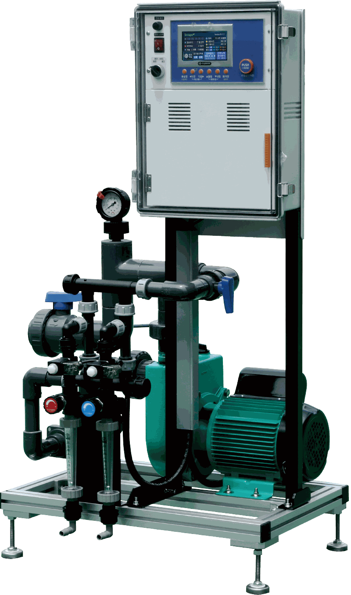
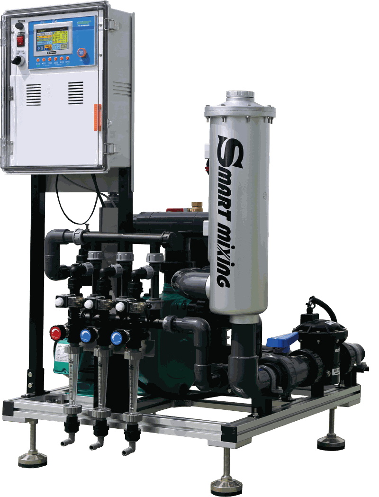

SOIL IRRIGATION SYSTEM이리시스토양재배용 관수·액비 공급 시스템
배양액 자동공급기 › 토양재배용 › 이리시스
MODEL SELECT
사용 목적에 맞는 이리시스를 선택하십시오
두 모델 모두 물과 액비를 혼합하여 구역별로 순차 공급하며, 제어 범위와 연계 기능에 차이가 있습니다.

IRRISYS II
이리시스 II
EC 측정·표시와 12구역 공급, 3라인 액비흡입 및 팜시스 연결을 지원하는 확장형 관수 시스템
130L/분최대 12구역3라인 액비흡입팜시스 연결
제품 상세보기 ›